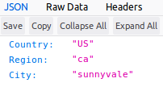

Updated (2023-08-26): tested with newest Go version, added sample using fetch() to the code repository.
In this post I'll go through a complete code sample that deploys a simple service as a Google Cloud Function (GCF). The service uses built-in capabilities of the GCF runtime to serve GeoIP (a.k.a. GeoLocation) information about its clients, letting dynamic web pages know where their visitors are coming from. The complete code sample is available here.
Free GeoIP information from GCP
Since client-side JS doesn't have easy access to the visitor's IP address, the traditional approach to find GeoIP information is to invoke a server endpoint; done properly, this HTTP request inherits the client's IP address and the server can then use an IP->location database to determine which location the client is calling from.
Multiple paid services exist that do this; for example https://ipstack.com - they provide a URL your JS can access and the result is detailed location information in JSON. These services tend to be paid for obvious reasons - usage can get heavy and servers cost money to run and maintain.
If you need a GeoIP service for your website, you can either use such a service or roll your own. This post is not an endorsement of any specific service - it's just a technical explanation of how to roll your own very easily (and cheaply). The decision of whether you want to do this is entirely up to you.
To roll our own we'd have to get a DB mapping IP->location somewhere and keep it up-to-date. This isn't hard, but there's an easier way. Google AppEngine services have long had free access to this information via special X-AppEngine headers the AppEngine runtime injects into requests. For example, X-AppEngine-Country contains the 2-letter country code, etc.
An AppEngine service is not hard to put together, but a Google Cloud Function is even easier. Luckily, these special headers also work for functions!
A cloud function that returns GeoIP information
With this information it's pretty easy to construct a cloud function that returns the data we're interested in:
type geoIPData struct {
Country string
Region string
City string
}
func GeoIP(w http.ResponseWriter, req *http.Request) {
var gd geoIPData
gd.Country = req.Header.Get("X-AppEngine-Country")
gd.Region = req.Header.Get("X-AppEngine-Region")
gd.City = req.Header.Get("X-AppEngine-City")
j, _ := json.Marshal(gd)
w.Header().Set("Content-Type", "application/json")
w.Write(j)
}
GeoIP is the handler we're going to expose through an HTTP trigger. If you have gcloud all set up, deployment is a one-liner:
$ gcloud functions deploy geoip --entry-point GeoIP --runtime go121 --trigger-http
It should be successful and print out a URL for your function, something like:
httpsTrigger:
url: https://<region>-<project-name>.cloudfunctions.net/geoip
If you now curl to that URL, it should return your location as JSON. Alternatively, visiting the page with a browser I get:
You should see your own location there, of course, unless you're using a proxy. It's a good idea to test the service with an IP-modifying proxy. I'm using the Hoxx Firefox extension for this, but a site like https://geopeeker.com would do as well.
Using GeoIP from a web app through an AJAX request
While it's nice to have a server that returns Geo IP data, it's not very useful on its own. You'll probably want to use it from JS, which is why we rolled this service in the first place.
Let's now create a web page that sends a XMLHttpRequest to our function and obtains location data. Here's a simple HTML file that embeds JS code to do this:
<html>
<head>
<title>Access GeoIP from JS</title>
</head>
<body>
<script>
// Note: put your region/project name here
var url = 'https://<region>-<project-name>.cloudfunctions.net/geoip'
var request = new XMLHttpRequest();
request.open('GET', url, true);
request.onload = function() {
if (request.status >= 200 && request.status < 400) {
// Success!
var data = JSON.parse(request.responseText);
document.writeln(data.Country, " ", data.Region, " ", data.City)
} else {
document.writeln("ERROR")
}
};
request.onerror = function() {
document.writeln("ERROR")
};
request.send();
</script>
</body>
</html>
(An alternative sample using fetch() is available in the code repository)
You can either open this page locally or place it on a server somewhere and access it there. It's very likely that you'll get an error though, with something like the following reported to the browser console:
Access to XMLHttpRequest at
'https://<region>-<project-name>.cloudfunctions.net/geoip'
from origin 'null' has been blocked by CORS policy:
No 'Access-Control-Allow-Origin' header is present on the requested resource.
This error is good - it tells us the browser and server conspired to protect us from a serious security vulnerability, wherein a malicious website could use our credentials to access some other, much more important, website for which we have login information saved.
Enabling CORS in our cloud function
Since we plan to serve this Geo IP data from one domain (our Google Cloud Function URL) and consume it from another domain, we'll need to enable CORS server-side.
For simple, single-use backends this is very easy to do. We can either allow public access to the server, or restrict it to a specific domain (or domains). For the former, we'll add this at the very top of the GeoIP handler function:
// Enable simple public access through CORS
w.Header().Set("Access-Control-Allow-Origin", "*")
To restrict access to specific domains, we'll need to check whether the Origin header sent by the client is in the list of allowed domains and echo it if it is. If it isn't, we can serve an error or not send any Access-Control- headers, which will fail the request.
Since our server is accessible through GET requests, we don't need to handle any CORS preflight logic.
Conclusion and additional resources
This was a simple and fun exercise, and you can find the full code sample here. It was inspired by this post from Ministry of Programming, which implements a similar service in Node.js
Here are some additional resources that you may find useful:
- The CORS page on MDN is great
- The fetch standard formally defines the semantics of CORS
- Request Headers and Responses for the AppEngine/GCF runtime environment on GCP
- NGINX GeoIP module
- Basics of CORS from Flavio Copes
- CORS from web.dev
- github.com/rs/cors - a feature-ful package for CORS in Go